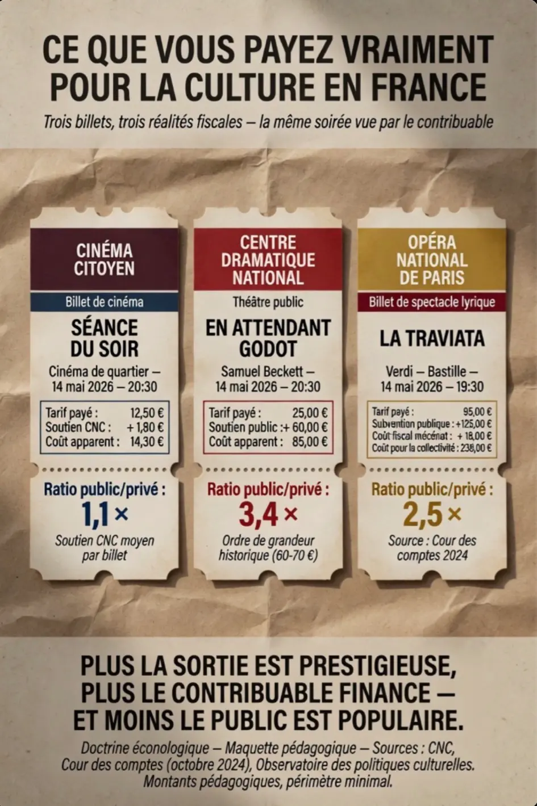

Pilier I
Énergie souveraine
L'énergie pilotable, bas-carbone et compétitive, condition de toute prospérité.
Nucléaire · biométhane local · rendement national
Un cadre institutionnel français pour la souveraineté énergétique, la durabilité obligatoire, le capital humain reclassé, la justice contributive et la démocratie décisionnelle. Six piliers actifs, documentés, sourcés et soumis à audit contradictoire multi-IA.
Dépendance énergétique, désindustrialisation, obsolescence programmée, perte de compétences, captation de valeur par les pays voisins. Le contribuable paie sans voir, sans décider, sans contrôler.
Énergie souveraine, garantie décennale, vérité des coûts publics, réparation des retraites, éconologie culturelle, démocratie décisionnelle. Chaque pilier documenté, chiffré, et soumis au crible de cinq intelligences artificielles.
Avant la doctrine, l'observation. Cinq questions pour ouvrir les yeux sur ce que la France finance sans le savoir.
Chaque matin, 374 000 travailleurs quittent leur domicile en France pour produire de la valeur en Suisse, au Luxembourg ou à Monaco. La France les a formés, soignés, scolarisés — et continue de financer leurs infrastructures. Combien les pays bénéficiaires remboursent-ils ?
Six fiches consolidées, qualifiées [FAIT] / [HYPOTHÈSE] / [ANALYSE], passées au crible de cinq intelligences artificielles contradictoires.

Vingt-cinq questions concrètes. À la fin, une matrice compare vos réponses aux positions documentées des principaux partis politiques.
Version de travail en audit. La matrice des partis est consolidée au fur et à mesure que les sources officielles sont vérifiées et archivées.
La doctrine est construite par triangulation contradictoire. Chaque thèse est soumise à cinq intelligences artificielles aux biais et architectures distincts. Leurs désaccords révèlent les angles morts. Les arbitrages restent humains.
Anthropic, OpenAI, Google, xAI et Perplexity AI sont des marques de leurs propriétaires respectifs. Leur mention ne suggère aucun partenariat ni endossement.